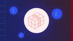

Netlify RSS
https://www.netlify.com/
Realize the speed, agility and performance of a scalable, composable web architecture with Netlify. Explore the composable web platform now!
フィード

Empower content teams with visual editing in the Dev Server
Netlify RSS
Read the article to learn more.
10時間前


Deploy Next.js 15 on Netlify today 1
1
Netlify RSS
Learn how to deploy Next.js 15 on Netlify and explore the new features available in this stable release.
2日前

Announcing configurable Python versions in Netlify builds
Netlify RSS
We‘re excited to announce that you can now specify any Python version in your Netlify builds using the `PYTHON_VERSION` environment variable. Whether you need an older version for legacy projects or the latest release for new features, this update gives you full control over your Python environment.
2日前


Simplify development with the benefits of serverless architecture
Netlify RSS
Discover the power of serverless architecture: build scalable, efficient, and cost-effective applications while offloading infrastructure management.
13日前

What is serverless architecture? A cost-effective way to scale your applications
Netlify RSS
Discover the benefits and best practices of serverless architecture, a cloud computing model that allows developers to focus on code without managing infrastructure.
13日前

Netlify Compose 2024 Recap
Netlify RSS
Explore the key announcements and features introduced at Netlify Compose 2024, focusing on AI, extensions, and workflow optimization.
15日前
Enhance your development workflow with continuous deployment
Netlify RSS
Read the article to learn more.
17日前
Introducing Netlify Extensions: Create more powerful, customized workflows
Netlify RSS
Use Netlify Extensions with ready-made third-party services or personalized interfaces to create customized workflows to tailor and enhance your Netlify experience.
21日前
Netlify launches Async Workloads: The future of durable serverless architecture
Netlify RSS
Explore the launch of Netlify Async Workloads, a new feature that enables developers to create durable, event-driven workflows on any Netlify site, enhancing reliability and efficiency without additional infrastructure management.
21日前